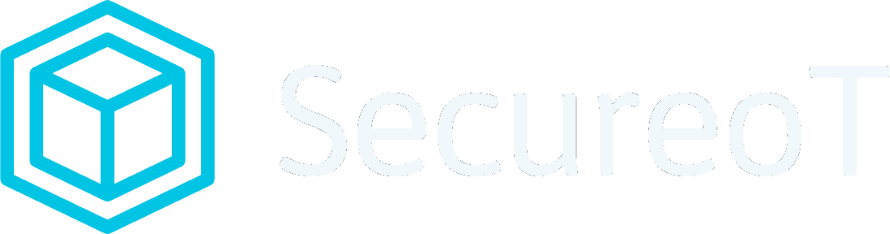
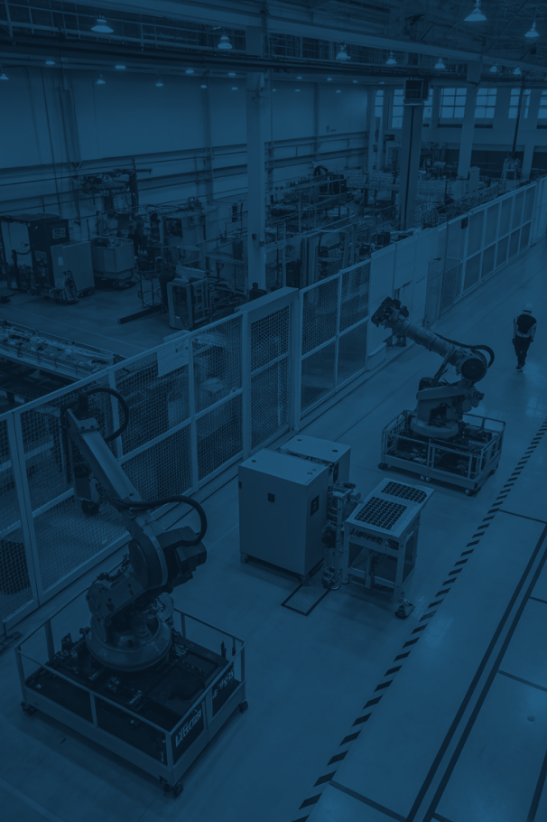
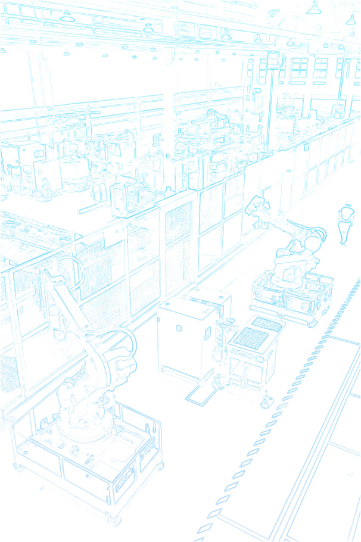

We map and defend complex industrial networks while they keep running — every asset, every command, every anomaly, in real time. Security you can see through, not trip over.
SecureOT brings real-time visibility and agentless protection to complex operational networks, helping critical systems run continuously, securely, and with confidence.
{{ r.body }}
See how SecureOT maps, monitors, and prioritizes risk across industrial networks.
The grid behind this text is the network we read. Each layer is parsed, baselined and watched — from the physical link to the function code that moves a valve.
{{ v.body }}
{{ r.body }}
Critical infrastructure is steel, concrete and machinery — but what it protects is human: water in the tap, light in the hospital, gas to the plant. Resilience is continuity for the people downstream.
So we build security that grows inside rigid industrial environments instead of fighting them: passive, protocol-native, and never a risk to uptime.
Our sensors and telemetry pipelines interoperate with the networking, automation and infrastructure stacks running the industrial estate.
A two-week passive assessment returns a full asset inventory, protocol baseline and prioritised risk register. No agents. No process interruption.